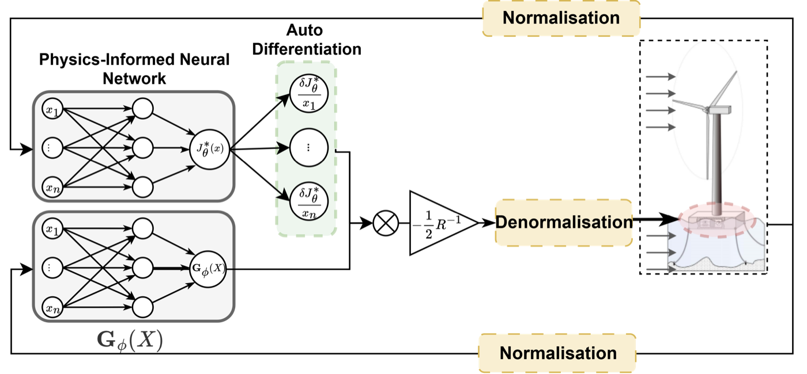
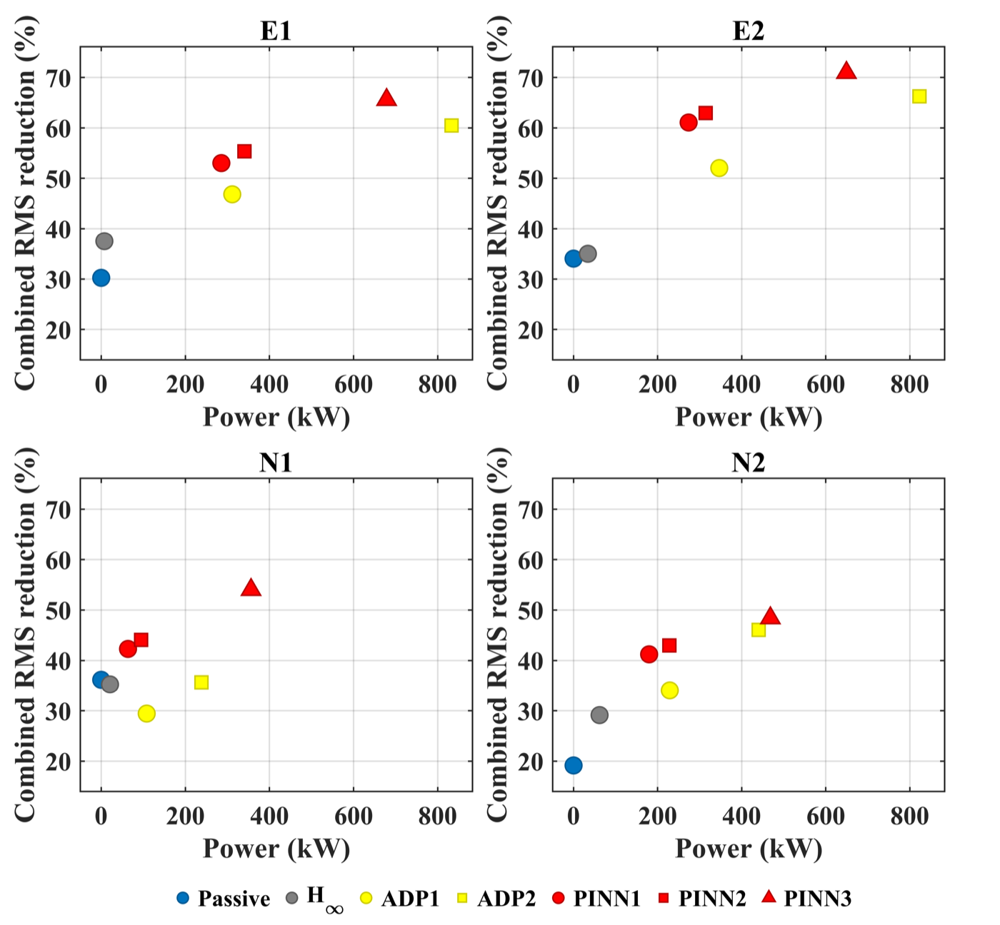

Teaching a neural network to hold a floating wind turbine steady
A floating wind turbine is pushed around by wind and waves at the same time, and its platform keeps pitching back and forth. That motion wears out the structure. An active tuned mass damper, a heavy mass moved by an actuator inside the platform, can push back, but the coupled turbine–platform–damper dynamics are nonlinear and high-dimensional, so the usual controller design does not fit.
Learn the dynamics instead of deriving them. A neural network surrogate is trained on simulation data to stand in for the physics. Then a physics-informed neural network solves the optimal-control (Hamilton–Jacobi–Bellman) equation on that surrogate, without a mesh-based solver and without per-step iterations.

The surrogate model, the PINN solver and the closed loop around a high-fidelity OpenFAST model of a 5 MW floating turbine, then tests against passive damping, an H∞ controller and adaptive dynamic programming in two normal and two extreme sea states.
The PINN controller substantially reduced platform pitch motion while using less power than the benchmark controllers (figure below: further up and to the left is better).

Python · PyTorch · OpenFAST · MATLAB/Simulink · with Prof Xiaowei Zhao's group, University of Warwick